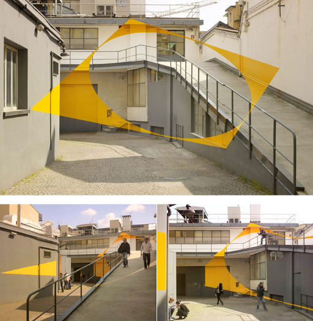
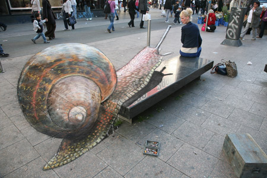
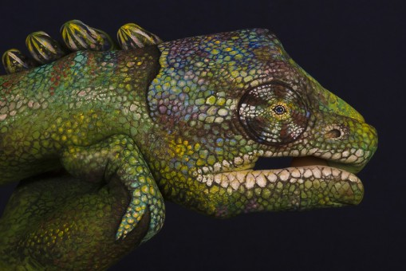
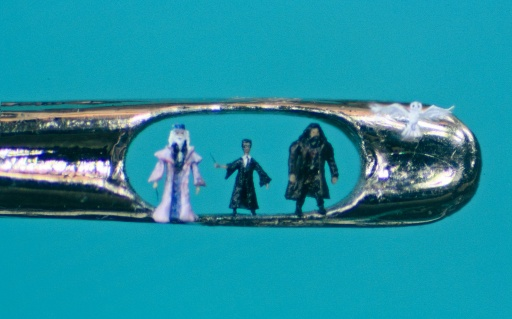
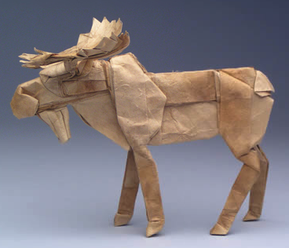

Anamorphic Art
Anamorphosis is a distorted projection or perspective requiring the viewer to use special devices or occupy a specific vantage point to reconstitute the image.
Here is a good example by Felice Varini:
{kind=link}

Pavement Drawings
Pavement Drawings can be combined with anamorphic art. One great artist I've found is Julian Beever. Here is one example:
{kind=link}

Hand Painting
You might already know body painting. Guido Daniele does something very similar he calls "Hand Painting". Here is one example:
{kind=link}

Hair Sculptures
Willard Wigan is a sculptor from Birmingham, England, who makes microscopic art. His sculptures are typically placed in the eye of a needle or on the head of a pin. A single sculpture can be as small as 0.005 mm. Here is an example from his gallery:
{kind=link}

Sand Art
It is amazing what can be done with sand. Sudarsan Pattnaik created this sculpture:
{kind=link}
Origami
Robert J. Lang seems to invest a serious amount of time in Origami. His gallery of mammals is very impressive. Here is a moose:
{kind=link}

Domino Day
This is not done by one artist, but it should be mentioned: